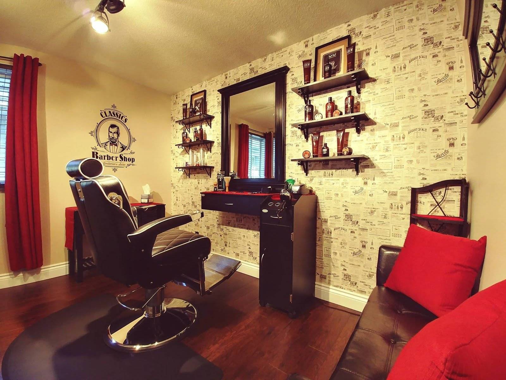

Cuts, beards & mustaches
“She does an amazing job with my hair, beard, and mustache.”
Source: Dillon LeBlanc, Google
Barber shop · 22 Kidd Ave · Trenton
A home-based barber shop with the look of a classic barbershop. Julie cuts men’s, women’s and kids’ hair, beards and mustaches, colour and special-occasion styles.
Tuesday to Saturday. Closed Sunday and Monday.

In the chair
No service menu or prices are published. This list comes from what clients describe in their Google reviews; call to ask about anything else.
“She does an amazing job with my hair, beard, and mustache.”
Source: Dillon LeBlanc, Google
A two-year-old’s first haircut went smoothly; “she’s absolutely brilliant with my kids’ hair too.”
Source: Google reviews
“Whether it’s a fresh cut, colour or special occasion hair… Julie is amazing.”
Source: Heidi Dent, Google
Braids, curls and updos, as shown in the listing photos.
Source: Listing photos; Heidi Dent, Google
“She has very professional cut my sons hair for Brighton Army Cadets and a shave.”
Source: Kathy Grantjeffreys, Google
“It’s refreshing to be taught how to care for my specific hair type.”
Source: Google review via exa.ai copy, Jul 2024
In her clients’ words
“I first started to go to Julie … when my hair was growing back after loosing it all to cancer treatments. She helped me with all my transition haircuts to make me look and feel great.”
Jane Lloyd, Google review
Work
Photos from the shop’s Google listing. Tap to enlarge.
Reviews
5.0 ★ from 63 Google reviews (checked Oct 31, 2026). Quotes are word for word; “…” marks a trim. Named reviews were read on Google directly. “Via exa.ai copy” means a public copy of the Google listing that doesn’t show reviewer names. The owner replies to reviews personally.
★★★★★
“Julie has been our go-to barber for over a year. She does an amazing job with my hair, beard, and mustache, and she’s absolutely brilliant with my kids' hair too. We always leave looking sharp. If you need a top-tier barber for yourself or the family, go see Julie!”
★★★★★
“Julie is a true hair rockstar!! I highly recommend her for anyone looking for exceptional hair. Her attention to detail, creativity, and ability to understand exactly what her clients want truly sets her apart. Whether it’s a fresh cut, colour or special occasion hair…. Julie is amazing and I will not go anywhere else!”
★★★★★
“I first started to go to Julie at Boyd’s Barbershop in Trenton when my hair was growing back after loosing it all to cancer treatments. She helped me with all my transition haircuts to make me look and feel great. I have continued to go to her since then and have recommended her to several friends. She is a great hair stylist and a wonderful person.”
★★★★★
“Meet this wonderful woman over 5 years ago. A very professional woman in her trade. I never felt totally amazingly, beautiful anywhere else, after she has done my hair. ( In my life time , I have been too many haircut places, that never made me feel the way Julie does ) I have been taking my son to Boyds Barbershop where she has very professional cut my sons hair for Brighton Army Cadets and a shave. A very welcoming, friendly professional establishment.”
★★★★★
“My son and I love going to Boyd's Barber Shop to get our hair cut! She is great with children, and I thoroughly enjoy chatting with her. It is a clean and professional environment and I highly recommend her! I absolutely love my hair, thank you Julie!”
★★★★★
“Awesome Awesome Awesome! We took our 2 year old to Boyd's Barber Shop based on multiple positive reviews on a local FB page. It was our little lads first ever hair cut and from the moment we arrived, we felt comfortable and confident that everything was going to go smooth....and it did! The chair is set up in the room of a house, it has the look of an old school barber shop and you almost forget you are at a home based business. …”
★★★★★
“Best barber shop in town! Julie has a great personality, making my son and I feel comfortable and welcome. She is all skill and professional, prioritizing customer satisfaction. This is a top-notch barber shop that I highly recommend.”
★★★★★
“Best haircut I've ever had!!! Her experience and education are invaluable. With so much misinformation about how to care for your hair out there, it's refreshing to be taught how to care for my specific hair type. My husband thinks she's the best too!! Thank you!!!”
Hours from the Google listing (checked Oct 31, 2026).
22 Kidd Ave
Trenton, ON K8V 2C7
A home-based shop in Trenton (Quinte West). Wheelchair-accessible entrance and LGBTQ+ friendly (per Google).
Phone from the Google listing. No website; Facebook only. Booking method isn’t published, so call.